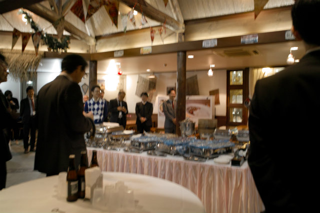
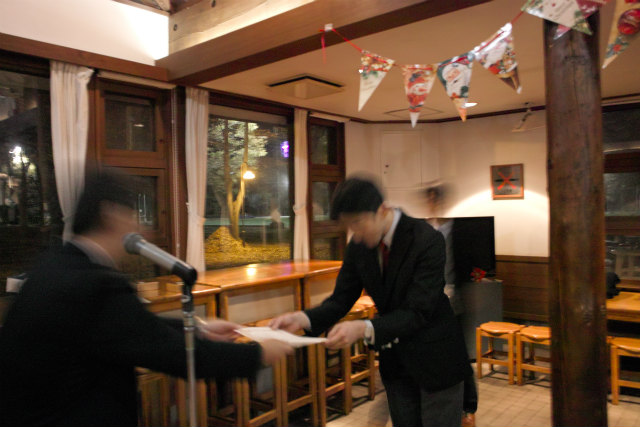
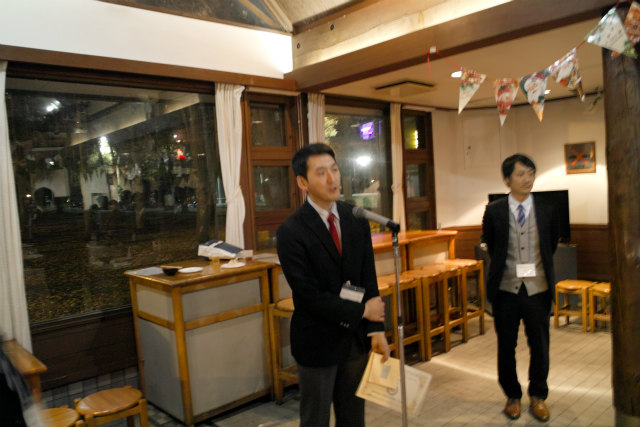
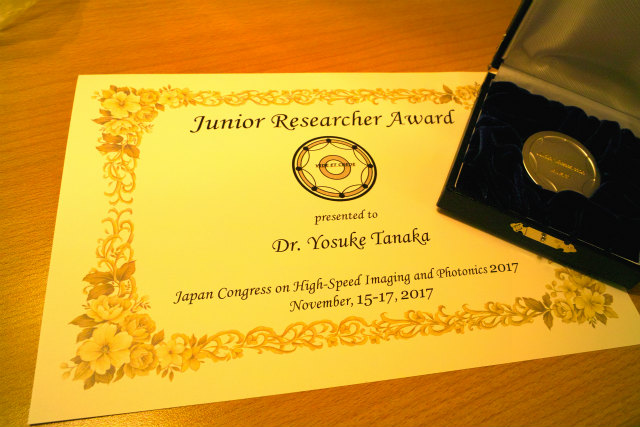

| ・ Junior Researcher Award (H29.11.16) | |||
助教の人が高速度イメージングとフォトニクスに関する総合シンポジウム2017に於いて，題目「位相回復ホログラフィを用いた噴霧液滴計測」に対しJunior Researcher Awardを受賞しました．去年公開した論文を応用したテーマの1つです．まだまだ応用先があり発展中のテーマなので，受賞は非常に励みになったとのこと．意欲ある学生募集中． |
|||
|

懇親会にて |

受賞式 | ||
|

非常に励みになります！ |

まだまだ発展中なのでJuniorはピッタリ | ||